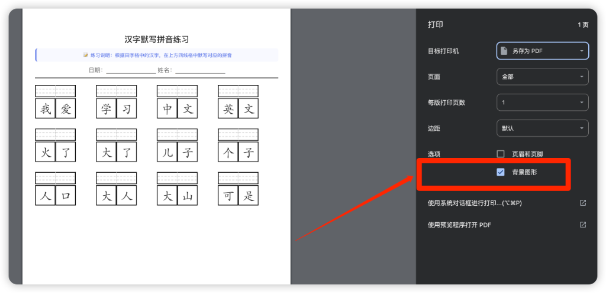

田字格生成器
输入中文内容，生成拼音田字格，用于默写练习
选择字帖类型：
根据拼音默写汉字
（显示拼音，学生填写汉字）
根据汉字默写拼音
（显示汉字，学生填写拼音）
输入中文内容：
📝
生成字帖
🗑️
清空
💡 使用说明：
输入您想让学生练习的中文内容
选择字帖类型：
根据拼音默写汉字
- 显示拼音，田字格空白，让学生写汉字
根据汉字默写拼音
- 显示汉字，四线格空白，让学生写拼音
排版规则：
• 每行最多显示
11 个字
（或位置）
• 超过 11 个字的内容会被自动忽略
• 使用
空格
可以在相应位置留空
• 使用
换行符
（回车键）可以开始新的一行
• 所有行
居左对齐
点击"生成字帖"按钮，系统会自动生成相应类型的字帖
生成后会自动打开打印预览，可以直接打印使用
⚠️ 重要提示：打印时请务必勾选"背景图形"选项
否则四线格的辅助线可能无法正常显示。参考下图：

拼音默写练习
日期：_______________ 姓名：_______________